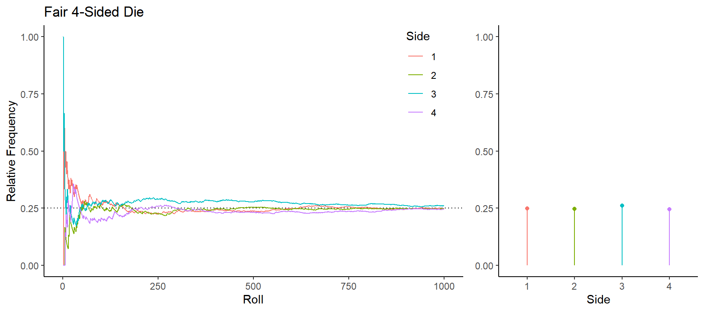
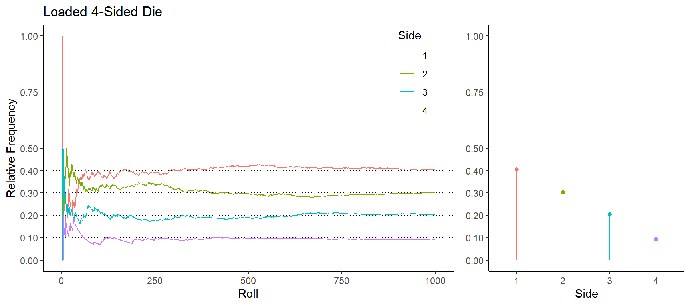
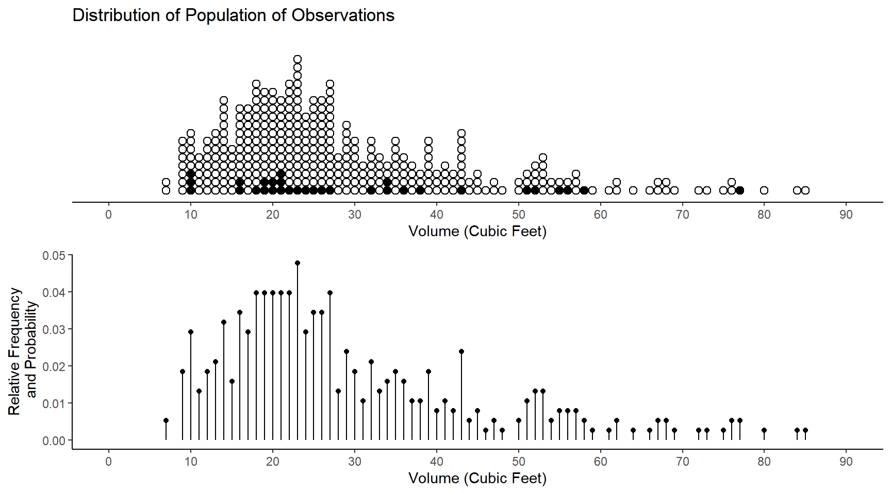
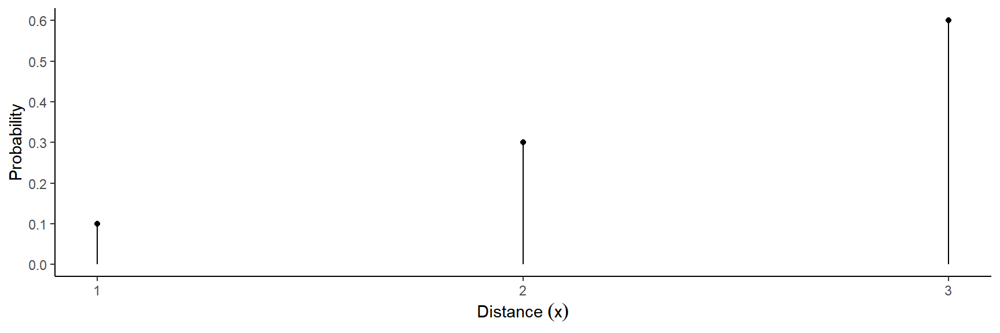
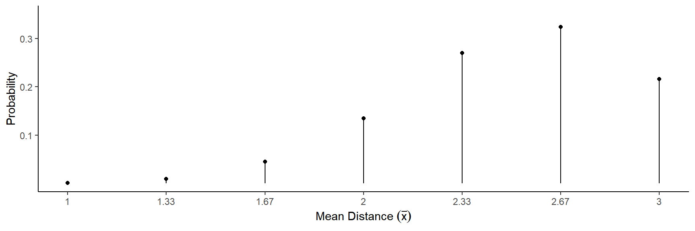
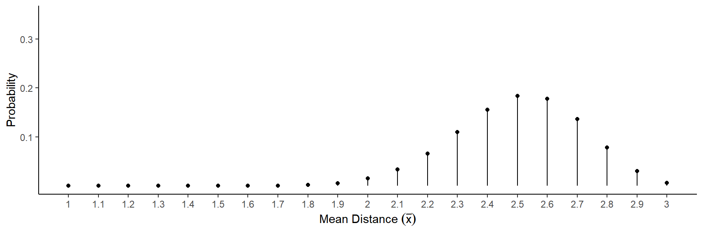
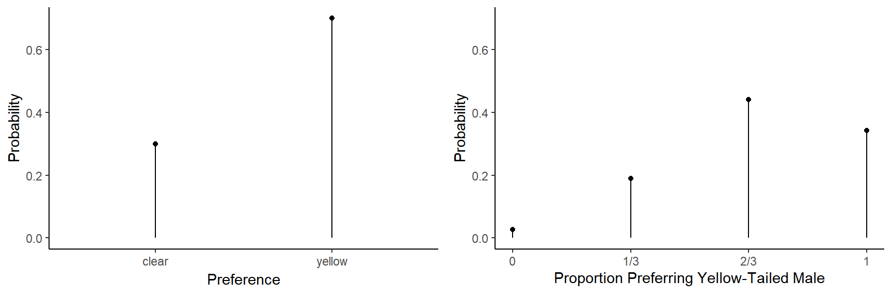

You can also download a PDF copy of this lecture.
Probability is a measurement of the “likelihood” of an event as a number between 0 and 1. These measurements follow the mathematical rules of probability theory.
How can we connect probabilities with empirical observations? The Law of Large Numbers states that a relative frequency will tend to “approach” (in some sense) the probability of an event as the number of observations increases.
Example: Consider rolling a 4-sided die many times and looking at the distribution of the sides.

In a survey the relative frequencies for the distribution of the population of observations become probabilities if we select units at random.
Example: Consider a survey of tree volume.

In an experiment the probabilities are determined by the underlying process that produces the observations.
Example: Suppose we are studying the distance that a toy trebuchet will throw a projectile.
First consider observing the distance (\(x\)) of one throw. 
Now consider observing the mean distance (i.e., \(\bar{x}\)) of a sample of \(n\) = 3 throws. 
Now consider observing the mean distance (i.e., \(\bar{x}\)) of a sample of \(n\) = 10 throws. 
Example: Suppose we are studying the “preference” of female platies for males with clear versus yellow tails. Consider observing (a) the apparent preference from one observation and (b) the proportion of observations out of \(n\) = 3 observations where the yellow-tailed male is preferred.

A random variable occurs when we assign values to an event. An event corresponds to a particular outcome of a random process. Distance, mean distance, preference, and proportion preferring yellow-tailed male are all random variables in the examples above. Random variables can be quantitative or categorical.
Types of Quantitative Random Variables:
The probability distribution of a discrete random variable consists of (a) the possible values of the random variable and (b) their probabilities. The distribution can be shown using a plot (as shown earlier) or a table (as shown below).
Example: Here are the probability distributions of one observation of the distance a trebuchet throws (\(x\)), and the mean distance in a sample of \(n\) = 3 throws (\(\bar{x}\)).
| \(x\) | \(P(x)\) |
|---|---|
| 1 | 0.1 |
| 2 | 0.3 |
| 3 | 0.6 |
| \(\bar{x}\) | \(P(\bar{x})\) |
|---|---|
| 1.00 | 0.001 |
| 1.33 | 0.009 |
| 1.67 | 0.045 |
| 2.00 | 0.135 |
| 2.33 | 0.270 |
| 2.67 | 0.324 |
| 3.00 | 0.216 |
Example: Here are the probability distributions of one observation of female platy preference (\(x\)), and the proportion of observations out of \(n\) = 3 where the yellow-tailed male is preferred (\(\hat{p}\)).
| \(x\) | \(P(x)\) |
|---|---|
| clear | 0.3 |
| yellow | 0.7 |
| \(\hat{p}\) | \(P(\hat{p})\) |
|---|---|
| 0 | 0.027 |
| 1/3 | 0.189 |
| 2/3 | 0.441 |
| 1 | 0.343 |
Two Important Probability Distributions in Statistical Inference
The mean of a discrete random variable is \[ \mu = \sum_x xP(x), \] where \(x\) denotes a value of the random variable and \(P(x)\) denotes the probability of that value.1 Note that the \(x\) below the summation sign here indicates that we sum over all values of \(x\).
The Law of Large Numbers implies that as the number of observations of a random variable increases, their mean (\(\bar{x}\)) will tend to “approach” (in some sense) \(\mu\).
Example: Consider the probability distribution of an observation of a single throw of the trebuchet (a population distribution).| \(x\) | \(P(x)\) |
|---|---|
| 1 | 0.1 |
| 2 | 0.3 |
| 3 | 0.6 |
We can confirm that the mean of the random variable \(x\) is \(\mu\) = 2.5 m.
Example: Consider the probability distribution of the proportion of female platies that prefer the yellow-tailed male from a sample \(n\) = 3 observations (a sampling distribution).| \(\hat{p}\) | \(P(\hat{p})\) |
|---|---|
| 0 | 0.027 |
| 1/3 | 0.189 |
| 2/3 | 0.441 |
| 1 | 0.343 |
We can confirm that the mean of the random variable \(\hat{p}\) is \(\mu\) = 0.7.
The variance of a discrete random variable is \[ \sigma^2 = \sum_x (x - \mu)^2P(x), \] and the standard deviation is \[ \sigma = \sqrt{\sum_x (x - \mu)^2P(x)}. \]
Example: Consider the probability distribution of an observation of a single throw of the trebuchet (a population distribution).| \(x\) | \(P(x)\) |
|---|---|
| 1 | 0.1 |
| 2 | 0.3 |
| 3 | 0.6 |
Recall that the mean of the random variable \(x\) is \(\mu\) = 2.5 m. We can confirm that the standard deviation of \(x\) is \(\sigma \approx\) 0.67 m.
Example: Consider the probability distribution of the mean distance of a sample of \(n\) = 3 throws of the trebuchet (a sampling distribution).| \(\bar{x}\) | \(P(\bar{x}\)) |
|---|---|
| 1.00 | 0.001 |
| 1.33 | 0.009 |
| 1.67 | 0.045 |
| 2.00 | 0.135 |
| 2.33 | 0.270 |
| 2.67 | 0.324 |
| 3.00 | 0.216 |
The mean of \(\bar{x}\) is \(\mu\) = 2.5 m. We can confirm that the standard deviation of \(\bar{x}\) is \(\sigma \approx\) 0.39 m. \[ \sigma = \sqrt{(1 - 2.5)^2 \times 0.001 + (1.33 - 2.5)^2 \times 0.009 + (1.67 - 2.5)^2 \times 0.045 + \cdots + (3 - 2.5)^2 \times 0.216} \approx 0.39. \]
We can say that “\(\mu\) is the mean of the probability distribution of the random variable” or, more simply, “\(\mu\) is the mean of the random variable.” Similarly we can say that “\(\sigma\) is the standard deviation of a probability distribution” or that “\(\sigma\) is the standard deviation of a random variable.↩︎